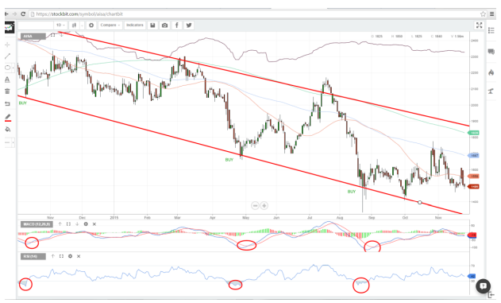
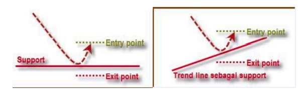
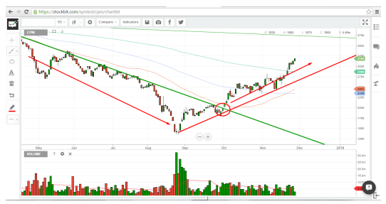
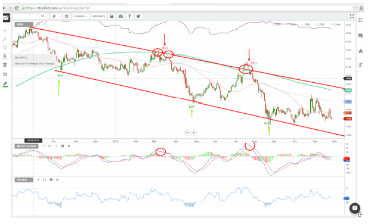
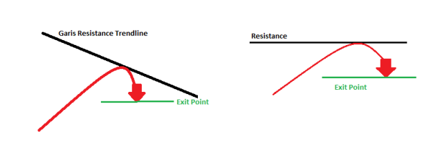
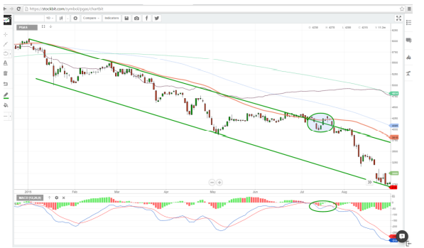
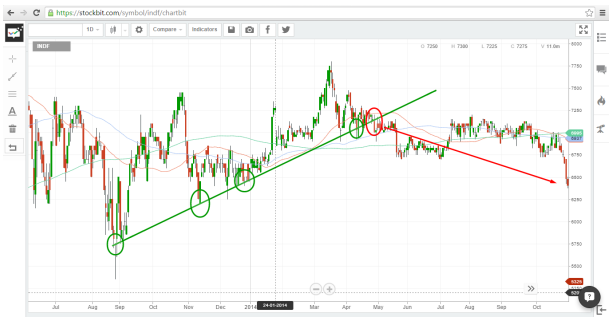

Taktik Trading Menggunakan Trendline dan Indikator
Pada akhirnya, penggunaan indikator-indikator diatas adalah untuk menjawab pertanyaan yaitu “kapan saat yang tepat untuk membeli” dan “kapan saat yang tepat untuk menjual”. Untuk itu perlu kembali diingat, tidak ada analisa maupun indikator yang 100% tepat. Penggabungan beberapa indikator sekaligus juga salah satu cara untuk lebih meningkatkan probabilitas ketepatan analisis. Semakin banyak indikator yang mendukung hasil analisis maka tingkat ketepatannya semakin tinggi.
-
Strategi yang tepat untuk membeli saham, yakni sebagai berikut.
-
Buy on Weakness (BoW) / Buy on Support
Istilah dan strategi masuk ke saham menggunakan Buy on Weakness / Buy on Support sangat sering digunakan. Inti dari strategi ini adalah mencari momen yang tepat saat harga saham melemah untuk membeli. Level pelemahan saham biasanya ditentukan dengan mencari level support sebuah saham. Berikut contoh kasusnya:
Di atas merupakan chart saham AISA yang sedang mengalami trend penurunan yang cukup panjang. Pada kasus AISA, terlihat saham berhasil rebound setiap menyentuh support garis bawahnya. Karena itu, bila kedepan saham ini kembali melemah menyentuh level supportnya adalah saat yang tepat untuk Buy on Weakness. Penentuan level buy pada saham AISA juga dapat dikonfirmasi menggunakan MACD yang golden cross ditambah garis RSI yang sudah masuk ke level area oversold sehingga probabilitas untuk reboundnya lebih besar.
-
Buy on Rebound
Strategi buy on rebound merupakan pengembangan dari strategi Buy on Support. Strateginya adalah dengan menunggu konfirmasi bahwa harganya telah berhasil rebound di supportnya terlebih dahulu barulah membeli sahamnya. Ilustrasinya kira-kira seperti gambar dibawah ini.
Keuntungan menggunakan strategi Buy on Rebound adalah meminimalisir terkena jebakan false breakout. Namun kelemahan Buy on Rebound adalah harga pembelian lebih tinggi dibandingkan jika membeli pada titik Support.
-
Buy on Breakout
Kebalikan dari Buy on Weakness, Buy on breakout justru mencari saham yang baru saja berhasil naik menembus level resistancenya, atau dengan kata lain membeli di saat harga relatif tinggi dengan harapan dapat menjualnya lebih tinggi lagi (Buy High sell Higher). Strategi buy on breakout biasanya diterapkan pada saham-saham yang mengalami trend sideways atau downtrend. Breakout pada trend sideways atau downtrend dapat menjadi indikasi adanya perubahan trend menjadi naik. Berikut contoh strategi buy on breakout.

Pada gambar terlihat saham ICBP yang berhasil breakout menembus resistancenya setelah sekian lama bergerak sideways. Penembusan ini didukung oleh MACD yang kembali mengarah keatas. Garis RSI yang belum memasuki area overbough juga masih memberikan ruangan untuk kenaikan lebih lanjut. Dengan menggunakan strategi Buy on breakout, maka saat sahamnya berhasil breakout, itulah saat yang tepat untuk membeli sahamnya.
Contoh lain penerapan buy on breakout pada saham CPIN yang berhasil menembus garis resistance trend penurunannya dan akhirnya berubah trend menjadi naik.
-
Buy on Weakness (BoW) / Buy on Support
-
Strategi dalam melakukan penjualan saham, yakni sebagai berikut:
-
Sell on Strength (SoS) / Sell on Resistence
Pada dasarnya SoS atau Sell on resistance memanfaatkan momentum untuk melepas saham pada saat saham tersebut menguat atau mendekati garis resistancenya. Sebagai contoh, mari kita kembali mengamati pergerakan saham AISA di bawah.
Dari pergerakan sebelumnya, dapat dilihat bahwa setiap harga AISA menyentuh level resistance maka akan terjadi koreksi. Garis resistance tersebut juga semakin dikonfirmasi dengan garis MA200 (Garis hijau) yang juga berada pada level yang sama. Dengan ini dapat diambil kesimpulan bahwa setiap harga menyentuh garis resistance dan MA200 maka sangat besar probabilitas untuk terjadi koreksi, maka ketika telah melakukan buy on support, maka target harga untuk melepas sahamnya adalah pada garis resistancenya.
-
Sell on Reversal
Strategi Sell on Reversal merupakan pengembangan dari strategi Sell on Resistance. Strateginya adalah dengan menunggu konfirmasi bahwa harganya benar-benar berbalik arah ketika terkena resistancenya, barulah dilakukan pelepasan saham. Ilustrasinya kira-kira seperti gambar dibawah ini.
Strategi ini membantu memaksimalkan profit karena ada kemungkinan setelah terkena resistance, sahamnya terus naik menembus resistancenya. Kelemahannya adalah jika memang sahamnya tidak mampu menembus resistancenya dan berbalik arah, maka keuntungan yang didapat tidak sebanyak jika menjualnya ketika berada di garis resistancenya.
-
Sell on Breakdown
Sell on breakdown adalah strategi untuk menjual saham ketika harganya turun hingga melewati garis supportnya. Sell on breakdown biasa digunakan pada saham yang sedang mengalami trend naik, namun turun menembus support trendnya sehingga mengindikasikan adanya perubahan menjadi trend turun. Berikut adalah contoh kasusnya:
Pada gambar saham INDF, terlihat sahamnya yang sedang dalam kondisi uptrend. Tercatat tiga kali INDF mencoba garis supportnya namun berhasil rebound kembali keatas. Ketika percobaan yang keempat, garis support tidak mampu menahan penurunan harganya dan setelah beberapa hari juga tidak kuat kembali ke atas garis support trend nya, maka itulah saat yang tepat untuk menjual saham ini.
-
Sell on Strength (SoS) / Sell on Resistence
-
Berikut ini kami berikan beberapa contoh kasus analisis teknikal:
-
Sell on breakdown juga dapat anda pakai untuk melakukan jual rugi atau cut loss.
Ketika anda melakukan buy on breakout, dan ternyata pergerakan harganya tidak sesuai dengan harapan anda, maka strategi sell on breakdown untuk meminimalisir kerugian anda dapat diterapkan, berikut contoh kasusnya.
Saham PGAS terlihat sempat menembus resistance atasnya setelah mengalami downtrend yang cukup panjang. Penembusan ini bisa menjadi pertanda akan adanya perubahan trend sehingga menggunakan strategi buy on breakout diputuskan untuk membeli sahamnya. Namun ternyata setelah beberapa saat pergerakan harganya malah kembali ke bawah garis (False breakout). Terlihat MACD juga tidak sanggup pindah ke wilayah positif dan kembali mengarah turun. Pada saat harganya tidak mampu naik dan kembali turun ke bawah garis, itulah saat yang tepat untuk melakukan cut loss untuk meminimalisir kerugian.
-
Ketika anda melakukan strategi buy on support, ternyata harganya malah bergerak turun terus menembus supportnya. Contoh kasusnya sebagai berikut.

Setelah dianalisis, ditemukan saham INDF cukup patuh terhadap supportnya karena tiap menyentuh garisnya, ada rebound yang terjadi. Menggunakan strategi buy on support, akhirnya dicoba untuk membeli INDF tepat pada saat menyentuh supportnya (Lingkaran hijau terakhir). Ternyata setelah ditunggu beberapa saat, sahamnya tidak berhasil rebound, malah cenderung bergerak turun. Maka untuk meminimalisir resiko dapat dilakukan cutloss saat sahamnya breakdown garis supportnya.
-
Sell on breakdown juga dapat anda pakai untuk melakukan jual rugi atau cut loss.